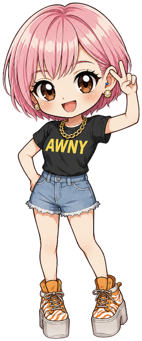
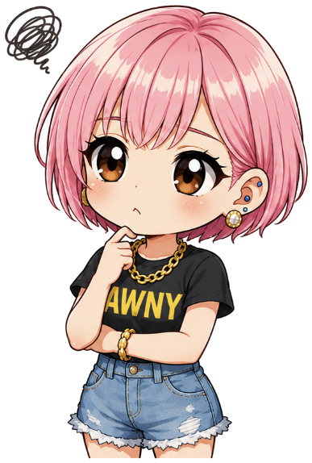
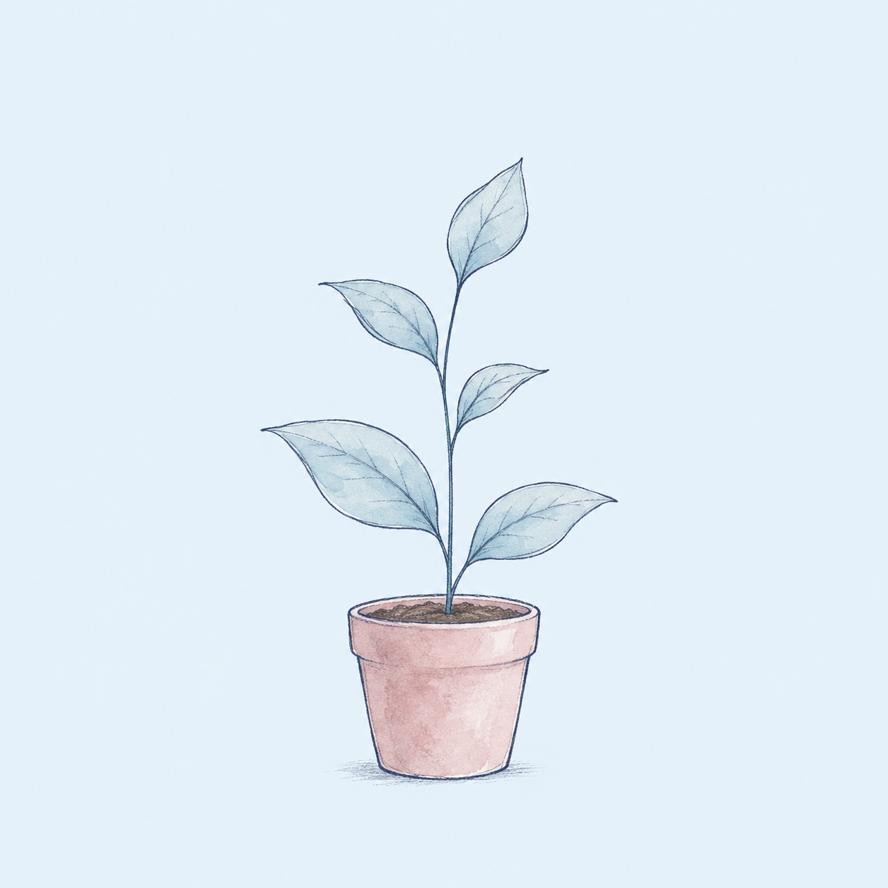
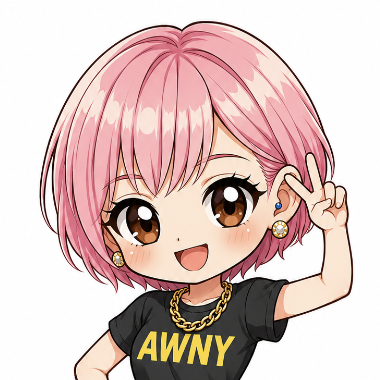

Nurturing Consulting
広告費を増やさずに、
同じ100名から
15倍の成約を。
お客様がLINEに登録してから、面談の席に座るまで。その「体験」を組み直すだけで、同じ広告費・同じ100名の結果が変わります。感情論ではなく、感情の設計。だから、すべて数字でご説明できます。
59.9%
面談成約率（決着ベース）
面談1,163件・2025年1月〜2026年9月
約10倍
失注リストの復活率
1.3% → 15.5%（F社）
−14.9pt
キャンセル率
配信を半減して改善（F社）
株式会社Merone 代表取締役 森川公美子
在宅リユーススクール運営 生徒2,700名（2026年8月時点）／スクール運営支援 累計45社

01
Why leads sleep
問い合わせはあるのに決まらない。
その原因は、「真ん中」にあります。
弊社にご相談いただく経営者の方のお悩みは、業種が違っても、ほぼこの4つに集約されます。
広告費が、年々上がっている
営業に、これ以上人を割けない
問い合わせはあるのに、決まらない
過去の見込み客リストが、眠っている
3つの部署と、一気通貫の見取り図
広告率 ＿＿％
LP率 ＿＿％
LINE登録率 ＿＿％
教育
（動画・配信）誰の仕事？
面談予約率 ＿＿％
面談率 ＿＿％
成約率 ＿＿％
多くの会社で、真ん中が「誰の仕事でもない」状態になっています。だからリストが眠ります。各矢印に数字を置けるかが、設計の第一歩。置けない矢印が、見えていない場所です。
弊社自身の失敗から
温度ゼロの方に、60分の動画を送ってしまった
広告→LINE→動画3本→面談の直球ルート。登録8名、面談0名（2026年7月・母数小）。原因は、入口の温度に合わせず、すでに温まった既存のお客様向けの重い導線をそのまま流したこと。ナーチャリングは「誰が・どんな温度で入ってきたか」から設計する。この失敗が、弊社の設計の出発点です。
登録 8動画完走 1面談 0

02
Same 100 leads
公式LINEに100名入ったとき、
何件決まりますか。
同じ100名、同じ広告費。違うのは「入ってから面談までの体験」だけです。
| 面談創出率 | 面談数 | 面談成約率 | 成約数 |
|---|
| 業界相場 | 5% | 5件 | 20% | 1件 |
| 弊社の構築 | 25% | 25件 | 60% | 15件 |
※ 単価50万円・高単価商材の仮定モデル。率は弊社支援先での実測レンジ。
15倍
広告費は、1円も増やしていません。
変えたのは、登録してから面談までの体験だけです。
S社（女性向けキャリアスクール）での実例
面談予約／月
240名→929名
導入半年。LINE登録後の体験を組み直しました。
成約率
40%→67%
4ヶ月で売上 3,257万円増。広告費は増やしていません。
03
Our way
お客様を「動かす」のではなく、
自分から動きたくなる環境をつくる。
育成型とは、心に、ゆっくり水をやること。
種をまいた翌日に引っ張れば、根ごと抜けます。
咲かせるのではなく、咲きたくなる環境を作る。ブロックや配信解除は「根っこから抜けた状態」で、一度抜けた方は戻りません。期限で焦らせる、催促を重ねる、警告で縛る。それは水ではなく、引っ張る行為です。

効き目の正体は、3つの力
テクニックではなく能力。ただし、型にすれば誰でも再現できます。弊社は、この3つを型にしてお渡しします。
01
EMPATHY RESOLUTION
共感解像度
「30代女性」では止めません。「夜22時、布団の中、片手で読んでいる人」。いつ・どこで・どんな指先で読まれるかまで想像するから、生活に馴染む言葉が書けます。
02
TRANSLATION
翻訳力
「感想を送って」「キャンセルしないで」という要求を、お客様への贈り物に翻訳します。要求は「私のため」、贈り物は「あなたのため」。同じ依頼が「自分のため」に変わった瞬間、人は動きます。
03
PRESSURE SENSOR
圧センサー
強い言葉・赤文字・「！」の連続・カウントダウン・重複配信。普通は見えない「ミリ単位の圧」を見抜いて抜きます。人は動かされていると感じた瞬間に止まり、特に女性のお客様は反転します。
エモーショナル＝感情論ではありません。感情の設計です。だから、A/Bテストで数字にできます。
04
Before / After
同じ依頼が、こう変わります。
ヒアリングシートの案内。要求の中身はまったく同じです。
BEFORE ｜ 普通の催促
【重要】まだ準備が完了していません！
期限が迫っています。至急ご対応ください。
フルネームの送付、ヒアリングシート、動画の視聴、感想の送付を本日中にお願いします。
9:00
→ 開いた瞬間に閉じられ、ブロックが起きる
AFTER ｜ 弊社の変換
ヒアリングシートの記載がないと、
正しくカウンセリングができません…。
たった１分で回答ができるので
すぐに回答お願いしますね☺️♡
9:00
「理由 → ハードル下げ → 優しいトーン」の3点セット。回答率 +10.8pt
| 要求（普通の言い方） | 翻訳後（弊社の言い方） |
|---|
| 感想を送ってください | 学べることの一覧を先に贈り、「読んだらスタンプを送ってね」 |
| 無断キャンセルしないでください | 「胸を張れる5か条」という読み物。警告はゼロ、日程変更の導線だけ置く |
| キャンセル後：特別枠をご用意しました | 「お子さまの体調、大丈夫でしたか？」日程は出さず、気遣いだけ |
文章の型 7つ
1通に、お願いは1つだけ
所要時間を書く（2秒・1分）
理由 → ハードル下げ → 優しいトーン
催促を、価値提供に変える
小さなYESを集める（スタンプ回収）
生活時間に届ける（朝7時・夜21時）
一斉配信でも「個別の顔」で
05
Proven in numbers
結果は、数字で出ています。
実際の支援先で計測した変化です。守秘のため社名・個人名は伏せ、業種のみ記載しています。
実測失注リストの掘り起こし
1.3%→15.5%
自動配信の定型文を、個別の気遣いに。復活率が約10倍（F社・411件/71件）。
実測体験会の実施率
+10.3pt
48.8%→59.1%。7日以上先の予約を71件→0件に（A社）。
実測配信フローの再設計
−14.9pt
キャンセル率46.2%→31.3%。配信20通超→10通前後に半減、回答率+10.8pt（F社）。
実測ヒアリングシート回答率
60%台→82.5%
案内バナーを小さくして、1画面に収めただけ。
実測体験後の追客スピード
90h→3.7h
初回返信の中央値を約1/24に短縮。成約率は約1.8倍（S社）。
実測勉強会からの面談→成約
64.3%
前回までの13〜18%から過去最高に。告知の「型」を勝ちパターンで再現（S社）。
A社｜女性向け金融教育スクール体験会のドタキャンを、「時間」の設計で止めた
- 実施率 48.8%→59.1%（+10.3pt）
- 7日超の予約 71件→0件
- 体験前配信のA/B：自己認識型が 79% の支持（n=48・母数小）
F社｜子育て世代向けサービス「催促」を「共感」に変え、掘り起こしが10倍に
- 復活率 1.3%→15.5%（約10倍）
- 共感型フォローの返信率 100%（3件中3件・母数小）
- キャンセル率 −14.9pt・回答率 +10.8pt
S社｜女性向けキャリアスクール体験の「前後」を設計し、予約も成約も引き上げた
- 面談予約 240名→929名／月（導入半年）
- 成約率 40%→67%・4ヶ月で売上3,257万円増
- 体験前1to1で参加率 35%→57%（初速）
※ 「母数小」「初速」と付した数値は少数サンプル・立ち上がり時点の値です。試算と明記した数値は実測からの逆算であり、実測値とは区別しています。
Whatever it takes
外部のコンサルタントではなく、メンバーの一員として手を動かします。
担当者が手一杯なら、配信システムに自分で入って全シナリオを把握し直す。数字の連携が止まれば、別経路を通して追加コストゼロで復旧する。広告から来たお客様がフォームで止まっていた表示の不具合を、自分で直す。すべて、実際にあった話です。
06
What we do
掘り起こしだけではありません。
結果が出るためなら、何でもやります。
すべての起点は、お客様に直接聞くこと
推測でファネルは組みません。電話やZoomでお客様お一人おひとりに直接ヒアリングし、アンケートと生の声を読み解きます。そこで見えた「本当の詰まり」を根拠に、ファネルを組み直し、配信文を書き換えます。
A
ナーチャリング設計・配信文
登録直後〜面談前〜当日〜キャンセル後まで、シナリオ全体を再設計。1通ずつ作り込み、A/Bの検定設計まで置きます。
B
営業チームの指導・仕組み化
成約率と当事者意識を見て育成方針を提言。対応マニュアル・返信テンプレ、タイプ別の声かけまで整備します。
C
ツール開発・自動化
面談・成約数の自動ダッシュボード、診断ツール、配信文チェッカー。二重入力と「頭の中の状態管理」をなくします。
D
LP・広告・クリエイティブ
動ける方だけが反応する訴求と、受け身層を入口で外す自己選別のコピー。広告→LPの数値設計から制作まで。
E
ファネル全体の設計
広告→LP→LINE→教育→面談→成約→フォローを一気通貫で。本当の詰まりを全データから特定し、そこだけを直します。
F
経営数値の設計
ROASを分解式で逆算し、必要な獲得単価・面談到達率を数字で特定。会話ログを分析し、成約に効く言葉を言語化します。
進め方
1
数字の棚卸し
各矢印に数字を置く。置けない場所を特定
5
型化・自走
マニュアルと仕組みに落とし、社内で回る状態へ
※ 費用・期間は、ご状況（リスト数・単価・体制）を伺ったうえでお見積りします。まず診断面談で「直す順番」を一緒に決めるところから。
07
For whom
向いている会社、向いていない会社。
無理にお勧めはしません。圧をかけると反転するのは、経営者の方も同じだからです。
こんな会社に向いています
- 高単価で、お客様が「迷う」商材を扱っている
- LINE・メールなど、名前の分かる見込み客の名簿がある
- 失注・キャンセルしたリストが眠っている
- 営業を増やさずに、成約を増やしたい
- 女性のお客様が多い（圧が逆効果になりやすい）
向いていません
- 低単価・即決の商材で、育成の時間がない
- 期限や警告で「刈り取る」やり方を続けたい
- 数字を見ずに、感覚だけで決めたい
- 見込み客の登録導線が、まったくない
勉強会の続きとして、3つご用意しています
- 013分ファネル診断：自社の100名は何件決まるか、5段階のどこが詰まっているかを見える化
- 02配信文の圧チェッカー＋翻訳表：今夜直す1通を貼るだけ
- 03掘り起こしテンプレート2通＋当日スライド＋診断結果を一緒に見る30分面談（無料）
kumiko0814.github.io/merone-nurturing/gift/

森川公美子 株式会社Merone 代表取締役
在宅リユーススクール運営 生徒2,700名（2026年8月時点）。スクール運営支援 累計45社。45社のLINEの中身を見てきました。配信文の1行から、営業組織の設計、経営数字の逆算まで、売上が上がるプロセスなら領域を選びません。
Let's begin, quietly.
まずは、いまのファネルと配信を見せてください。
お客様を追い立てず、自分から動きたくなる場をつくる。売り込みはしません。直す順番を、一緒に決めるところから始めます。
08